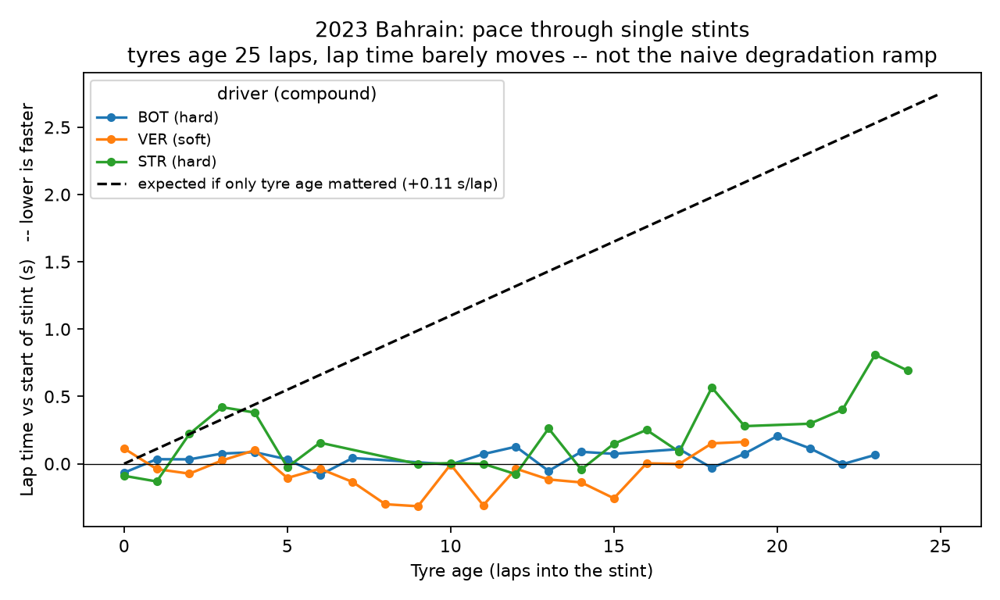
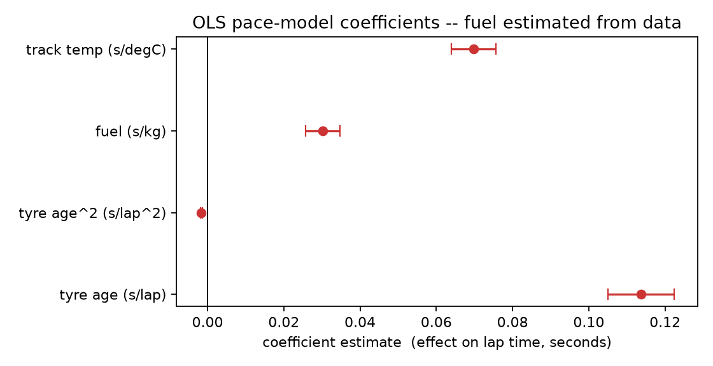
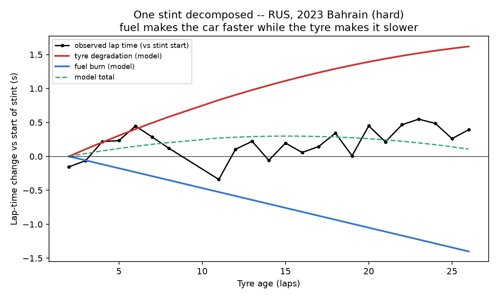
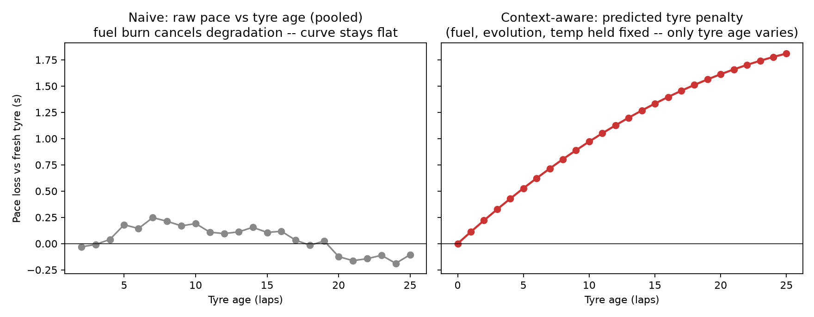
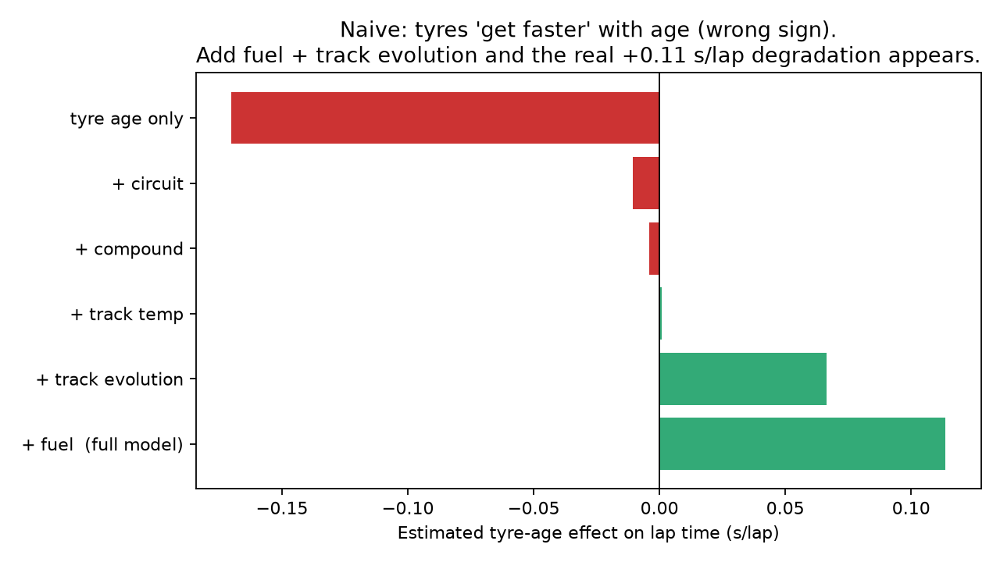
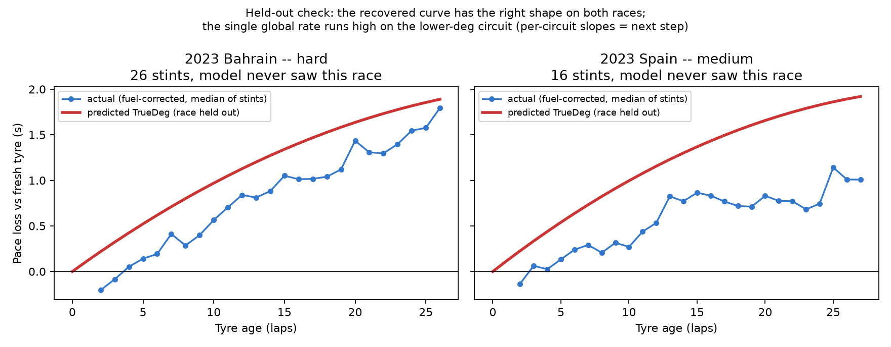

Estimating true F1 tyre degradation from lap performance
13 races · 2023–202410,381 racing lapscounterfactual regressionheld-out validation
We observe a hidden-variable problem in real F1 data:
lap time shifts through a stint for many reasons at once, and tyre
degradation is only one of them. We propose a counterfactual
approach to isolate the tyre's contribution — model expected pace
from tyre state plus its context, then hold the context fixed and
rewind only tyre age. We demonstrate a first version with a simple,
fully-inspectable regression, and validate whether the recovered curve
tracks tyre behaviour on races the model never saw.
Slide 02
Lap time is partly a function of tyre health
There is an intuitive chain. As a tyre accumulates laps its condition
changes, and that changing condition contributes to the pace the car can
produce.
TYRE AGE -> TYRE HEALTH -> LAP PERFORMANCE
If tyre age were a clean stand-in for tyre health, estimating degradation
would be simple: fit lap time against tyre age and read off the slope. This
is the setup — no machine learning yet.
Slide 03
But lap time is not just the tyre
Take real stint data and plot lap time against tyre age. The
relationship is not a clean ramp.

Three long, clean stints from the 2023 Bahrain GP. The
tyre ages 25 laps; lap time barely moves. The dashed line is what a pure
tyre-age model expects from the degradation slope recovered later
(+0.11 s/lap). The real stints stay flat.
A tyre can be older while the car gets faster. A tyre can
be younger while the lap gets slower.
The tyre is ageing while everything around it changes:
Tyre ageing -> slower
Fuel burn -> faster (car sheds ~100 kg over a race)
Track evolution -> faster (rubber goes down, grip comes up)
Temperature -> changes grip and thermal behaviour
Traffic -> dirty air, tow, DRS
Driver -> management, push phases
Observed lap time is a mixture of the tyre and everything else happening
on the lap. That is the first real obstacle.
Slide 04
So what are we really trying to estimate?
We do not want to answer "how fast was the lap?" We want to
answer:
How much of the lap-time change came from the
tyre?
OBSERVED LAP TIME
|
+----------------+----------------+
v v v
TYRE TRACK CAR
age evolution fuel
compound surface driver
stint history circuit energy
| | |
+----------------+----------------+
v
ENVIRONMENT (weather, track / air temp)
|
TRAFFIC (dirty air, tow, DRS)
Tyre degradation is the hidden component we want to isolate — a
latent-variable estimation problem, stated without the jargon.
Slide 05
What we need to account for
We do not call the other effects "noise". Several are meaningful physical
or contextual variables. We group them into layers and model their effect,
so it is not misattributed to the tyre.
Layer
Variables (proxies available today)
Tyre
compound, tyre age, stint, tyre history
Car & driver
fuel-load proxy, driver behaviour, energy / deployment proxies, team & car context
Track
circuit, track evolution, surface, day / night
Environment
track temp, air temp, humidity, wind, rain
Race conditions
traffic, dirty air, tow / DRS, track status
Regulatory context
regulation era, tyre generation, fuel & energy rules
We do not assume these are noise. We model their effect so we
do not incorrectly attribute it to the tyre.
Slide 06
Grounded in the sport, not just the data
FIA REGULATIONS
|
+-------+-------+
v v v
TYRES FUEL ENERGY
| | |
+-------+-------+
v
operating constraints
v
F1 DATA + TELEMETRY
v
MODEL INFERENCE
Regulations tell us the constraints and technical
context the car and tyres operate under — mandatory compound sets,
fuel-flow and race-fuel limits, ERS deployment rules.
F1 data tells us what actually happened lap by lap.
The model estimates the part we cannot directly
observe: true tyre degradation.
This is also where the 2026 regulation and tyre-generation context belongs
— as framing for what the model must adapt to, not as the project itself.
Slide 07
From observed performance to Inchident
Step 1 — Learn observed pace
Fit lap time from tyre state, a fuel proxy, track evolution, weather,
compound and circuit. In the first version this is a plain linear
regression:
Fit on all 10,381 laps: adjusted R² = 0.982. Every coefficient is
inspectable.

OLS pace-model coefficients with 95% confidence intervals.
Track evolution is left off this plot — it is not separately identified
once fuel is in the model.
Physics coefficients
Term
Estimate
95% CI
Reads as
Tyre age
+0.114 s/lap
[0.105, 0.122]
older tyre → slower
Tyre age²
−0.0016 s/lap²
[−0.0019, −0.0014]
rate eases slightly with age
Fuel
+0.030 s/kg
[0.026, 0.035]
heavier car → slower
Track temp
+0.070 s/°C
[0.064, 0.076]
hotter track → slower here
The fuel coefficient is a check on the method. The
codebase carries an independent published rule of thumb of 0.030 s/kg. The
regression is given no fuel information beyond a lap-count proxy and
recovers 0.030 s/kg — ratio to prior 1.01. The data
reproduces a known number we did not feed it.
Step 2 — Hold the context constant
For one fixed race context — circuit, weather, track state, fuel,
compound — change only tyre age.
Step 3 — Compare against a fresh tyre
Tyre penalty(N) = Predicted pace(N) - Predicted pace(0)
This difference is our estimate of tyre-induced performance loss. It is
the core of Inchident.

One Bahrain hard stint, decomposed by the fitted model: the
tyre adds ~1.6 s of degradation over 26 laps, fuel burn returns
~1.4 s, and the small residual is what the stopwatch shows. Fuel
makes the car faster while the tyre makes it slower — which is why the raw
stint on Slide 03 looked flat.
Slide 08
The first prediction
Sweep tyre age 0 → N for a fixed context and read off the predicted
penalty. Compare the naive curve with the context-aware curve.

Left — naive. Raw pace vs tyre age, pooled over every
stint; it wanders around zero and even dips negative — fuel burn cancels
degradation. Right — context-aware. The counterfactual penalty rises
cleanly to ~1.8 s by lap 25, with fuel, evolution and temperature held
fixed.
The naive curve is not "wrong noise" — it answers a different question.
Watch the tyre-age coefficient as we add one control at a time.

Tyre-age effect on lap time as physical controls are added.
Fuel burn and track evolution together account for the entire gap between
the wrong-signed naive estimate and the recovered degradation.
Tyre-age coefficient by model
Model
Tyre-age effect
Note
tyre age only
−0.17 s/lap
tyres appear to get faster — wrong sign
+ circuit
−0.011 s/lap
+ compound
−0.004 s/lap
+ track temp
+0.001 s/lap
+ track evolution
+0.066 s/lap
+ fuel (full model)
+0.114 s/lap
recovered degradation
Slide 09
Validating the idea
Refit the model with one race completely held out, predict that race's
degradation curve, and compare it with the actual fuel-corrected stint pace
— the median over every fresh stint of that compound.

Bahrain 2023, hard (held out): the recovered curve has
the right shape and tracks the actual median within ~0.2 s.
Spain 2023, medium (held out): right shape again, but the single
global rate runs ~0.7 s high on this lower-degradation circuit.
Honest read: a single field-wide rate captures the shape of
degradation on unseen races but not yet the level on every
circuit. Per-circuit and per-compound slopes are the next iteration, not a
claim we make now.
On raw predictive accuracy the interpretable model is deliberately
modest — on absolute lap time, where lap-to-lap variability dominates, the
context terms cut held-out MAE only ~6% (1.51 → 1.43 s). A flexible
gradient-boosted model on the same features, scored on circuit-normalised
pace, cuts held-out error 43–47% versus the naive
tyre-age model — tested both on the rest of each race and on entirely
unseen races. The interpretable model's value is in its coefficients; the
flexible model shows the signal is real and exploitable.
The scientific test: does a curve learned after
accounting for context explain unseen F1 tyre behaviour better than the
naive tyre-age model? On shape and on normalised pace error, yes. On
absolute per-circuit level, not yet.
Slide 10
Beyond the first model
Today / this idea. Structured F1 data — timing, tyres,
telemetry, weather, track, race context — feeds a context-aware model that
produces a degradation curve.
Future. Add information a lap table does not contain:
INCHIDENT
|
+------------+------------+
v v v
telemetry video pit data
| | |
+------------+------------+
v
temporal state
v
richer tyre intelligence
Video signals worth exploring later: onboard footage, visible locking and
sliding, pit-stop footage, track and weather cues. On the modelling side:
temporal models (LSTM / GRU) for within-stint state, multimodal fusion, and
physics-informed constraints so the curve obeys known tyre behaviour. This is
the extension, not the initial claim.
Slide 11
What Inchident enables
From "how fast?" to "why?". Once we can estimate the tyre's
actual performance state:
Tyre intelligence — how much performance has the tyre
actually lost?
Degradation forecasting — how quickly will it lose
more?
Driver / car analysis — is the loss tyre-driven or
operational?
Condition analysis — how does the tyre respond to
different track and weather?
Race strategy — when does the cost of staying out
outweigh the cost of pitting?
Post-race analysis — what did we predict versus what
happened?
The deck in one flow
1 tyre age
2 tyre health
3 lap performance
4 real data breaks it
5 everything else changes
6 map those variables
7 ground in F1 + FIA context
8 estimate expected pace
9 rewind tyre age
10 isolate the tyre penalty
11 generate the curve
12 validate on real F1
13 temporal + multimodal + physics
14 race / engineering use cases
Appendix
Reproducing the numbers
Every figure and number in this document is produced by the prototype
repo:
Data. 13 races, 2023–2024. Five circuits (Bahrain,
Spain, Silverstone, Monza, Suzuka) appear in both seasons; Jeddah, Monaco
and Las Vegas are single-season generalisation hold-outs. 10,381 laps after
keeping green, dry, racing laps and removing in / out laps and per-stint
outliers. Compounds: hard 5,562 ·
medium 2,997 ·
soft 1,822.
Known limitations, stated up front
FuelKg is a lap-count proxy scaled to a published
0.03 s/kg rule of thumb, not a measurement. The model calibrates around
it; we do not claim to know the fuel load.
Within a single stint, tyre age and fuel load are perfectly
collinear (correlation −1.00 — both linear in lap number). Only pooling
stints that start at different race laps breaks this (pooled correlation
−0.41), which is why the method needs many races, not one.
Left: one stint at a time — tyre age and fuel are the
same clock, correlation −1.00. Right: 13 races pooled — one tyre age
now spans every fuel load, correlation −0.41. Pooling is what makes the
coefficients identifiable.
Track evolution is not separately identified once fuel is in the
model (wide CI spanning zero); its effect on the slope progression is
real but its point estimate is not reliable on this dataset.
A single global degradation rate over-predicts on low-degradation
circuits (Slide 09). Per-circuit / per-compound slopes are future work.
Position is a coarse dirty-air proxy until gap / interval
telemetry is loaded.